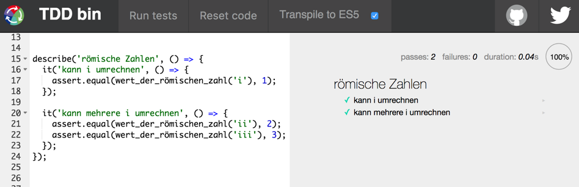

Testing
This guide will explain why you should write automatic tests for your web application. By referring to this guide, you will be able to:
- Understand testing terminology
- Write unit and integration tests for your application
You can find the setups discussed here in the example setups repository.
1 Testing Software
There are two ways to test software: have an actual person use the software or have a program automatically test the software.
People who test software "by hand" often do this under the heading "Quality Assurance" or "QA". See jobs in Salzburg or jobs in Berlin.
But even if you have a QA department for your project, as a developer you still will write automated tests too.
1.1 Why write automatic tests?
There are many reasons why you would want to write tests for your program:
- when you first write the program: to know if the program works (as specified)
- to know if it still works after adding a new feature
- to know if it still works after refactoring the code
- to know if it still works after updating the dependencies
1.2 Example test
This simple example in Javascript tests a function foo. The thing that is being testet is called the "system under test" (SUT), in this case the SUT is the function foo.
describe('foo function', function() {
it('converts number 1 correctly', () => {
let input = { value: 1, language: english };
assert.equal(foo(input), 'one');
});
});
The test framework gives you the possibility to group your
tests. In this example this is done with describe and it.
This test of the function foo consists of:
- a setup phase, where we prepare a data strucure we need later
- the calling of the function foo with the prepared input
- comparing the output of foo to the expected output
For the last step the word assert or assertion is often used.
Here is a longer example in ruby:
describe Customer do
before do
@movie_1 = Movie.new("Iron Man 3", Movie::NEW_RELEASE)
@movie_2 = Movie.new("Avatar", Movie::REGULAR)
@movie_3 = Movie.new("Brave", Movie::CHILDRENS)
@customer = Customer.new("Vroni")
end
describe "customer statement" do
it "is printed correctly for a new release movie" do
# [...]
end
it "is summed up correctly for 3 movies" do
@customer.add_rental(Rental.new(@movie_1, 2))
@customer.add_rental(Rental.new(@movie_2, 3))
@customer.add_rental(Rental.new(@movie_3, 4))
@customer.statement.must_match /Amount owed is 12.5/
@customer.statement.must_match /You earned 4 points/
end
end
end
Here the setup phase has been extracted to a before block.
This is run before every test inside the same describe block.
The means that the variable will be reset before each test,
if you change @movie_1 in the first test this will not affect
the second test.
In this example a more complex assertion is used: must_match will
do a pattern match on the resulting string.
1.3 What Test can and cannot do
Each test we write is just one example. If the test is green we know that this specific example works, but not all other input data. Testing all possible combinations of input data is impossible!
We want to test the parts of the systems that we programmed ourselves, not the dependencies we use. The dependencies (hopefully) are already tested.
1.4 Types of Tests
As a beginner you should distinguish at least two types of tests:
- unit test - tests one specific unit of code (be it a class, a package, one model, one view....)
- end-to-end test - tests the whole program from the perspective of a user
For Web-Application the end-to-end tests means: sending an HTTP request to the backend, which really talks to the database, returns HTML+CSS+JS as it normally would, and then have the javascript interpreted and run as it would in a browser. This takes a lot of setup work and is slow.
But end-to-end tests give you more valuable insights from a users perspective, e.g.: "the shopping cart checkout does not work".
Unit tests are easier to write, run faster, and help developers find the part of the program that is responsible for a problem: "the cookie store class breaks if you store an undefined value".
2 Test Driven Development (TDD)
If you write tests after writing the code of the program itself you will face several problems:
- why write tests now, when we are done programming? isn't it a waste of time?
- we already know the problems our program has, and will write friendly tests that avoid these problems
- the system is finished and the architecture does not lend itself to testing
To avoid these problems "Test Driven Development" turns this around:
- you write the test first
- then you write just enough of your program to satisfy the test
- then you refactor your code
This cycle is also known by three keywords:
- red
- green
- refactor
because
- in the "red" phase you write the test, but there's no implementation yet. so the test does not pass, it is red
- then, in the "green" phase, you write just enough of your program to satisfy the test, until the test turns green
- and finally, you "refactor" your program: you do not change the functionality (and do not break the test), but you increase readability and maintainability
2.1 Tipps for TDD
- Start with the simple test cases
- Always run the test once before you start implementing (red!)
- do not add code that is not needed (yet) (see YAGNI)
- build your program from small units (functions, classes, components), that can be tested separately
- always test the outside of the unit, not the inside
3 Getting Startet with unit testing in Javascript
3.1 TDDbin
On the site https://tddbin.com you can try out TDD without having to install or configure anything. It gives you modern Javascript (compiled to ES5 in the background) and the testing framework mocha.

3.2 Mocha
To use mocha to test your command line javascript code you can set up a project, add mocha as a development dependency:
npm install --save-dev mocha
Put your first tests into a file test.js which you can run
either from the commandline as mocha test.js or through npm
as npm test.
Inside your test you need to require assert:
var assert = require('assert');
You can find an example setup as folder 04 in the repo
3.3 Mocha and Babel
Using modern Javascript and transpiling it to ES5 complicates the test setup. The tests are also written in modern Javascript and also transpiled. Then the resulting tests in ES5 are run against the resulting ES5 of the program code.
You can find an example setup as folder 05 in the repo
4 Literature
- Beck, Kent. Test-driven development: by example. Addison-Wesley Professional, 2003.
- Gupta, Ravi Kumar, Hetal Prajapati, and Harmeet Singh. Test-Driven JavaScript Development. Packt Publishing Ltd, 2015.
- Fields, Jay, Shane Harvie, Martin Fowler, and Kent Beck. Refactoring: Ruby Edition. Pearson Education, 2009.
- Metz, Sandi. Practical Object-Oriented Design in Ruby: An Agile Primer. Pearson Education, 2013.